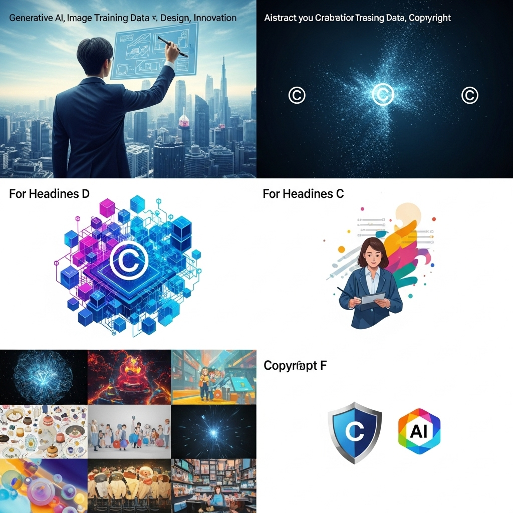
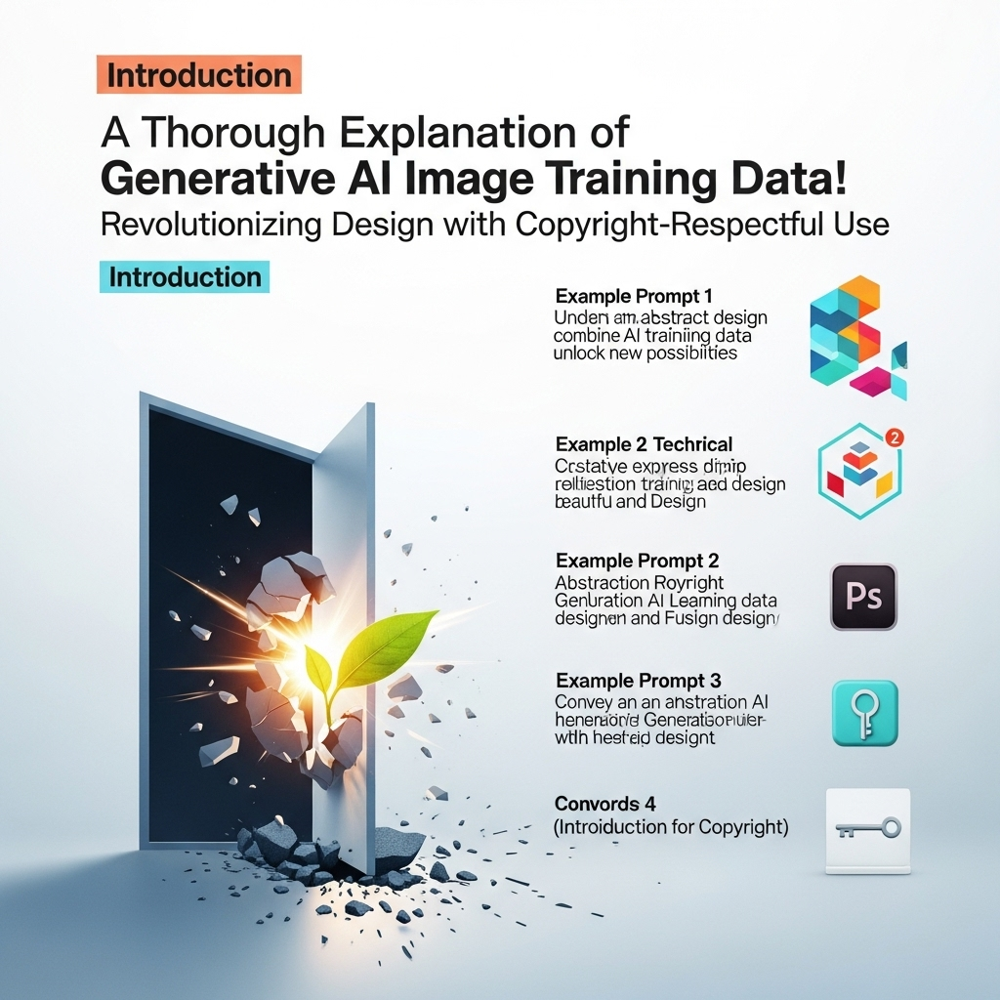
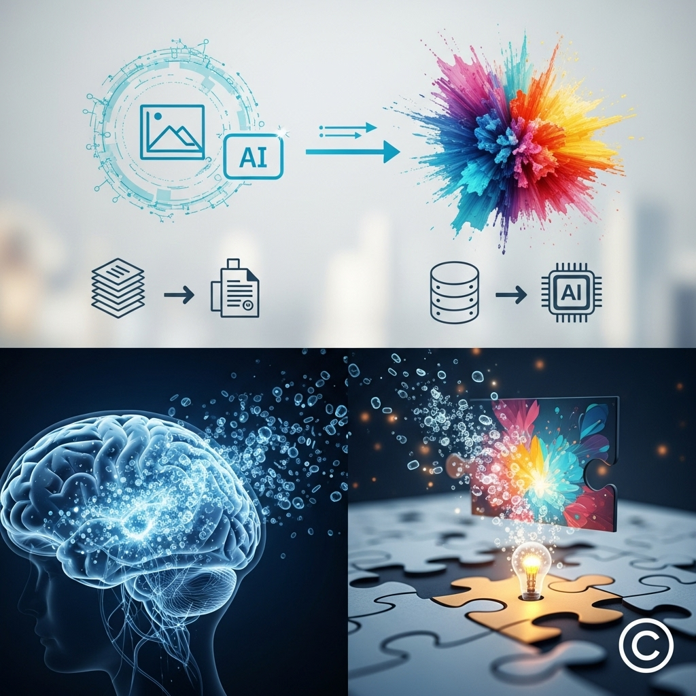
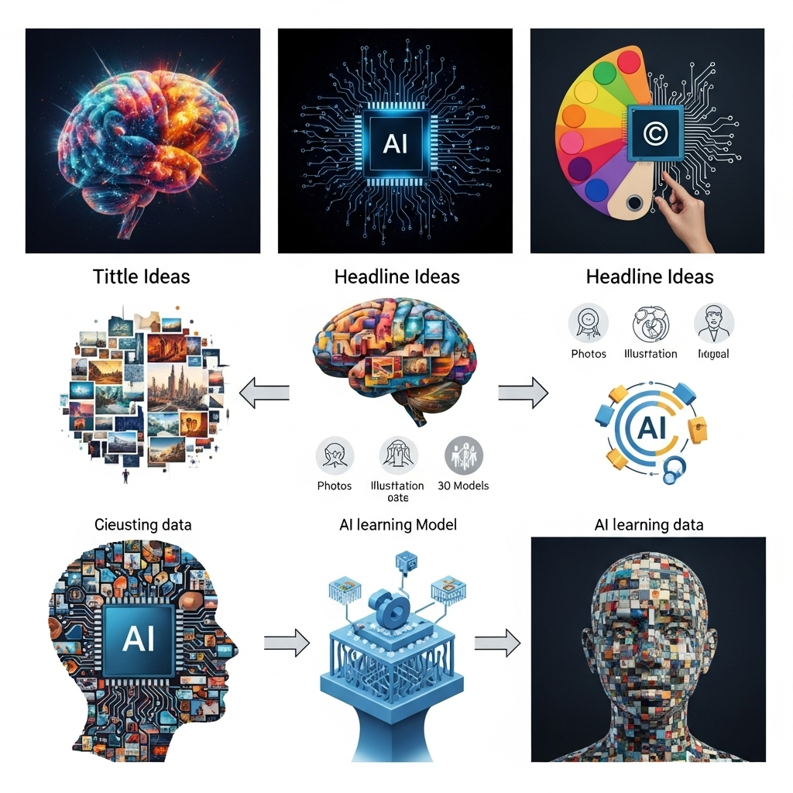
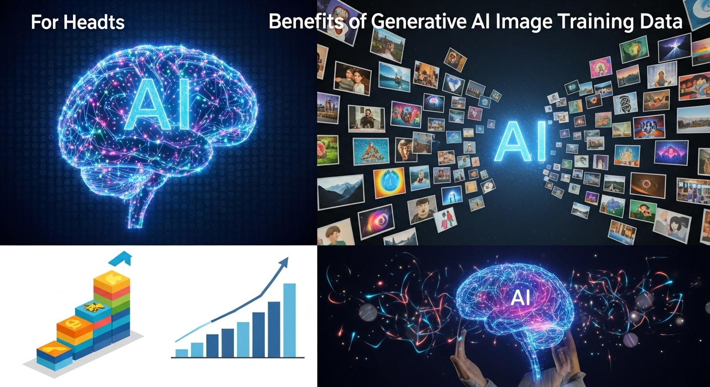
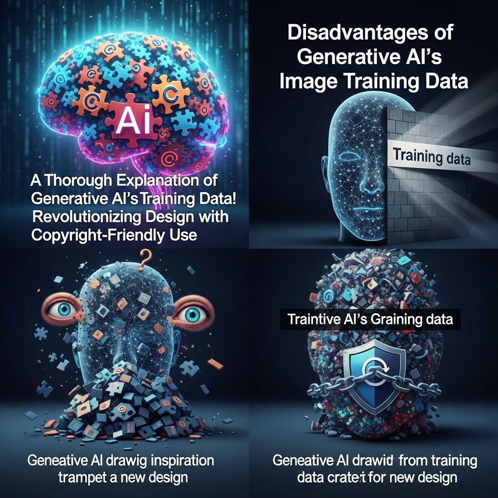
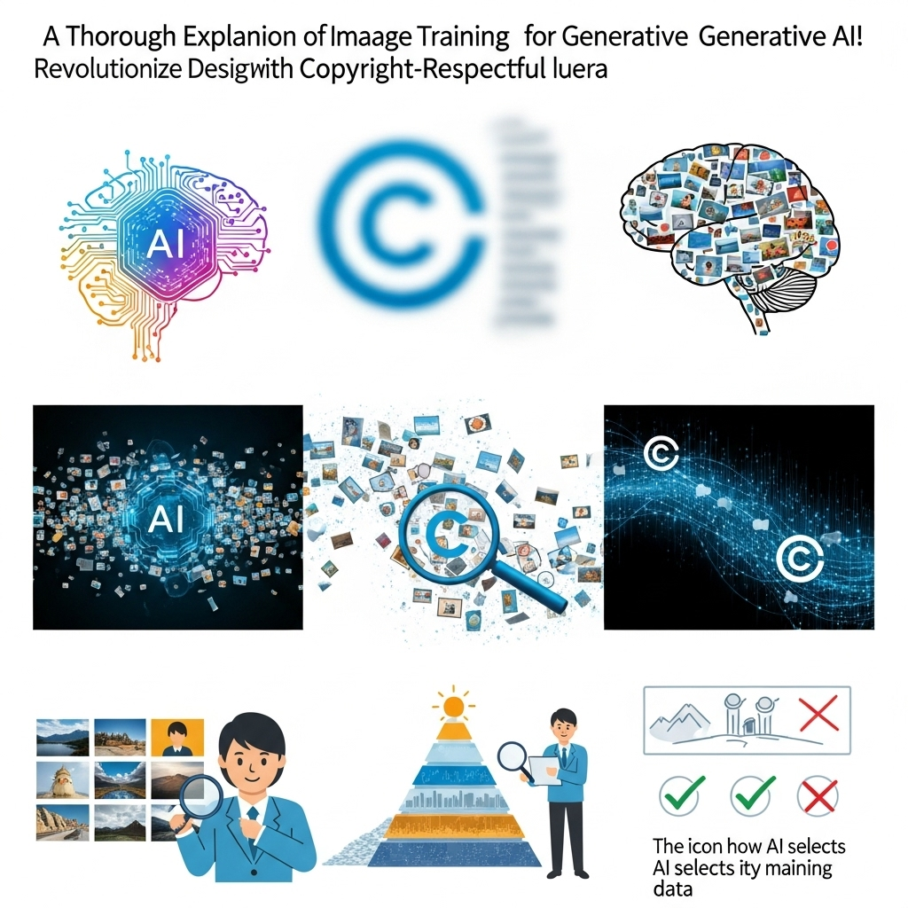

生成AIの画像学習データ徹底解説！著作権に配慮した活用法でデザインを革新

導入

デジタル技術の進化は、私たちのクリエイティブな活動に計り知れない影響を与え続けています。その中でも特に近年、目覚ましい進歩を遂げているのが「生成AI」です。テキストを入力するだけで、瞬く間に高品質な画像を生成するその能力は、デザイナー、アーティスト、そしてあらゆるクリエイティブ領域に携わる人々にとって、驚きと同時に新たな可能性をもたらしています。
しかし、この革新的な技術を最大限に活用し、デザインの未来を切り拓くためには、その裏側にある仕組みを深く理解することが不可欠です。生成AIが画像を生成する際、その「思考の源」とも言えるのが、膨大な量の「画像学習データ」です。この学習データが、AIの表現力、創造性、そして生成される画像の品質を決定づけると言っても過言ではありません。
生成AIの活用が広がるにつれて、その学習データに関する議論も活発化しています。特に、著作権の問題は、クリエイティブ業界にとって避けて通れない重要なテーマです。既存の著作物を学習データとして利用することの是非、生成された画像の著作権は誰に帰属するのか、そして商用利用における法的リスクは何か――これらは、生成AIをデザインワークに導入しようと考えるすべての方が直面する疑問でしょう。
本記事では、生成AIの画像学習データに焦点を当て、その基礎知識から種類、AIが画像を学習する仕組み、そして最も懸念される著作権問題までを徹底的に解説します。さらに、デザイナーの皆様が安心して、かつ倫理的に生成AIを活用できるよう、メリットとデメリットを明確にし、著作権に配慮したデータの選び方や具体的な活用法を詳しくご紹介します。
生成AIは単なるツールではありません。それは、私たちの創造性を拡張し、デザインプロセスを革新する可能性を秘めた強力なパートナーです。しかし、その力を正しく理解し、責任を持って使いこなすことで初めて、真の価値が生まれます。この記事が、生成AI時代のデザインの最前線で活躍される皆様にとって、確かな知識と実践的なヒントを提供し、新たなインスピレーションの源となることを心から願っています。さあ、生成AIと画像学習データの奥深い世界へ、一緒に足を踏み入れてみましょう。
生成AIの画像学習データとは？基礎知識と重要性

生成AIが私たちの目の前に驚くほどリアルで独創的な画像を生成する様子は、まるで魔法のようです。しかし、その魔法の裏側には、緻密な計算と、そして何よりも膨大な「画像学習データ」の存在があります。このセクションでは、生成AIが画像を生成する基本的な仕組みから、学習データがいかにその品質を左右するか、そしてなぜデザイナーがこの学習データを理解する必要があるのかについて、優しく丁寧に解説していきます。
生成AIが画像を生成する仕組み
生成AI、特に画像生成AIは、私たちが与える「プロンプト」と呼ばれるテキスト指示に基づいて画像を創造します。このプロセスは、まるで画家が依頼者の要望を聞き、自身の知識と経験を総動員して絵を描くかのようです。AIの場合、その「知識と経験」に当たるのが、事前に学習した膨大な画像データなのです。
具体的に、生成AIが画像を生成する主要なモデルとしては、GAN（Generative Adversarial Network）やDiffusion Model（拡散モデル）などが挙げられます。
- GAN（敵対的生成ネットワーク）: これは、画像を生成する「生成器（Generator）」と、生成された画像が本物か偽物かを判定する「識別器（Discriminator）」という、二つのAIが互いに競い合いながら学習を進める仕組みです。生成器はより本物に近い画像を生成しようと努力し、識別器はより正確に偽物を見破ろうとします。この「敵対的」な学習を通じて、生成器は非常にリアルな画像を生成する能力を身につけていきます。
- Diffusion Model（拡散モデル）: 近年、特に注目を集めているのが拡散モデルです。これは、まずノイズ（ランダムな点の集まり）からスタートし、学習した逆プロセスを段階的に適用することで、そのノイズの中から徐々に意味のある画像を「復元」していくというアプローチを取ります。まるで、霧の中から少しずつ像が浮かび上がってくるようなイメージです。このモデルは、特に高品質で多様な画像を生成できることで知られています。
どちらのモデルも、最終的に画像を生成するためには、私たちが入力するプロンプトと、AIが学習した画像データとの間の関連性を理解している必要があります。例えば、「青い空の下の白い犬」というプロンプトに対して、AIは学習データの中から「青い空」「白い犬」といった要素や、それらが自然に組み合わさった画像を参考にし、新たな一枚を創造するのです。このプロセスにおいて、学習データはAIの「視覚的な辞書」であり、「創造の土台」となります。
学習データが生成画像の品質に与える影響
生成AIの能力は、突き詰めれば学習データの質と量に大きく依存します。学習データは、AIが世界をどのように「見るか」を形成する基盤となるため、その特性が生成される画像に直接的な影響を与えるのです。
例えば、もし学習データに多様な人種や文化の画像が十分に網羅されていなければ、AIは特定の外見やスタイルに偏った人物像を生成する可能性があります。同様に、特定の時代や地域の建築様式に関するデータが不足していれば、その分野でのリアルで正確な画像を生成することは難しくなります。
具体的に、学習データが画像の品質に与える影響は以下の点に集約されます。
- リアリティと解像度: 高品質で高解像度の画像データが豊富に学習されていれば、AIはよりシャープで細部まで描写されたリアルな画像を生成できるようになります。逆に、低品質な画像やノイズの多いデータばかりを学習すると、生成される画像も粗くなったり、不自然な部分が生じやすくなります。
- 多様性と創造性: 多様なスタイル、テーマ、被写体を含むデータセットは、AIに幅広い表現力を与えます。これにより、AIは単調な画像ではなく、斬新で創造性豊かな、あるいは特定の要望に合わせたユニークな画像を生成する能力を高めます。例えば、写真のようなリアルな画像から、イラスト、油絵、水彩画のような様々なスタイルの画像を生成できるようになります。
- 正確性と一貫性: 特定のオブジェクトや概念に関する正確な情報（例：猫の種類、車のモデル、歴史的な服装など）が豊富に含まれていれば、AIはプロンプトに忠実で一貫性のある画像を生成できます。学習データが偏っていたり、誤った情報を含んでいたりすると、AIは不正確な、あるいは奇妙な画像を生成してしまうリスクがあります。
- バイアスの反映: 学習データに存在する偏見やステレオタイプは、そのままAIが生成する画像に反映されてしまうことがあります。例えば、特定の職業の人物像が男性ばかりであったり、特定の肌の色の人物がネガティブな文脈で描かれていたりすると、AIも同様の偏った表現をしてしまう可能性が生じます。
このように、学習データは生成AIの「脳」を形成する原材料であり、その品質が生成される画像の「知性」と「美しさ」を決定するのです。
なぜデザイナーは学習データを理解すべきなのか
生成AIがデザインツールとしての地位を確立しつつある今、デザイナーが学習データを理解することは、単なる技術的な知識以上の意味を持ちます。それは、自身のクリエイティブなアウトプットの質を高め、倫理的な責任を果たし、そしてこの新しい時代の変化に対応するための不可欠なスキルとなるからです。
- 生成画像の品質とコントロール: デザイナーは、生成AIの出力が学習データによって左右されることを理解することで、より意図した通りの画像を生成するためのプロンプトエンジニアリングの精度を高めることができます。どのようなデータで学習されたモデルを使えば、自分の求めるスタイルや雰囲気に近い画像が得られるのか、という判断が可能になります。
- 著作権と倫理的リスクの管理: 学習データに含まれる著作物の問題は、デザイナーにとって最も現実的な懸念事項の一つです。どのようなデータセットが利用されているのか、そのデータセットのライセンスは何かを理解することで、著作権侵害のリスクを低減し、安心して商用利用できる画像を生成するための判断基準を持つことができます。また、学習データの偏りから生じるバイアス問題を認識し、自身の作品が意図せず差別的な表現を含んでしまわないよう、倫理的な配慮を行う責任があります。
- 新たな表現の可能性の探求: 学習データの特性を理解することは、AIの「得意なこと」と「苦手なこと」を把握することにつながります。これにより、AIの強みを最大限に活かし、既存のリソースでは実現が難しかった斬新なビジュアルやアイデアを生み出すための戦略を立てることができます。例えば、特定のスタイルやテーマに特化したカスタムデータセットを構築することで、唯一無二の表現を追求する道も開けます。
- クライアントとの信頼関係構築: クライアントワークにおいて生成AIを利用する場合、その技術的背景や著作権に関するリスク、そして倫理的な配慮について、デザイナーが明確に説明できることは、クライアントからの信頼を得る上で非常に重要です。透明性のあるコミュニケーションは、プロジェクトを円滑に進めるための鍵となります。
- 未来のデザイン業界への適応: 生成AIは、デザイン業界の働き方やクリエイティブプロセスを根本から変えつつあります。学習データに関する深い理解は、単にツールを使いこなすだけでなく、この変革期においてデザイナーが自身の専門性を高め、新たな価値を創造していくための基盤となります。
学習データは、生成AIの心臓部であり、その力を引き出す鍵です。デザイナーがこの鍵を手にすることで、生成AIは単なる自動生成ツールではなく、真に創造的なパートナーへと昇華されるでしょう。
生成AIの画像学習データ：種類と仕組みを徹底解説

生成AIが驚くほど多様な画像を生成できるのは、その背後にある膨大な学習データセットと、それを効率的に処理する複雑なAIの仕組みがあるからです。このセクションでは、代表的な学習データセットの種類から、AIが画像を学習するディープラーニングの基礎、そしてデータ量と質がAIの創造性にどのように影響を与えるのかを、さらに詳しく掘り下げていきます。
代表的な学習データセットの種類
生成AIの学習に用いられる画像データセットは、その規模、内容、そして利用目的によって多種多様です。これらのデータセットは、AIの「視覚的な百科事典」のようなものであり、AIが世界をどのように認識し、どのように画像を生成するかを決定づける重要な要素となります。ここでは、特に大規模な画像生成AIの学習によく用いられる代表的なデータセットをいくつかご紹介します。
- ImageNet（イメージネット）:
- 特徴: 非常に大規模な画像データベースで、約1400万枚以上の画像と、2万以上のカテゴリに分類されたラベル（例：「犬」「猫」「自動車」など）を持っています。各画像には、その内容を示すキーワードが詳細に付与されています。
- 役割: 主に画像認識や物体検出といったタスクの学習に利用され、多くのAIモデルがImageNetで学習することで、基本的な視覚認識能力を獲得します。生成AIにおいても、オブジェクトの形状やテクスチャ、カテゴリ間の関係性を理解するための基礎的な学習データとして活用されます。
- 重要性: AI分野におけるベンチマーク（性能評価基準）としても広く使われており、AI研究の進展に大きく貢献してきました。
- COCO (Common Objects in Context):
- 特徴: ImageNetと同様に大規模ですが、COCOは「文脈の中の一般的なオブジェクト」に焦点を当てています。約33万枚の画像に、80種類の物体カテゴリに対するバウンディングボックス（物体を囲む枠）とセグメンテーションマスク（物体のピクセル単位の領域）、そして画像全体のキャプション（説明文）が付与されています。
- 役割: 物体検出、セグメンテーション（画像中の領域分割）、キャプション生成といった、より複雑な視覚タスクの学習に用いられます。生成AIにおいては、複数のオブジェクトが混在するシーンや、オブジェクト間の関係性を理解し、より複雑な構図の画像を生成する能力を養うのに役立ちます。
- LAION-5B（ライオン・ファイブビー）:
- 特徴: 近年の画像生成AI、特にStable Diffusionなどの基盤モデルの学習に大きく貢献したデータセットです。その名の通り、約58億枚もの画像とテキストのペアから構成されており、ウェブ上からクロールされた膨大なデータを含んでいます。
- 役割: 画像とテキストの関連性を学習するための大規模なデータセットとして、特に「テキストから画像を生成する」というタスクにおいて、AIに非常に高い理解力と表現力を与えました。LAION-5Bは、単にオブジェクトを認識するだけでなく、テキストの抽象的な概念やスタイル、感情といった要素を画像に反映させる能力をAIに学習させます。
- 重要性: オープンソースで公開されており、研究者や開発者が自由に利用できるため、画像生成AIの急速な進化を後押しする重要な存在となっています。ただし、ウェブから収集されたデータであるため、著作権や倫理的な問題が議論の対象となることもあります。
- Google Open Images Dataset:
- 特徴: 約900万枚の画像と、約2000万個のオブジェクトアノテーション（ラベル付け）を持つ、Googleが提供する大規模なデータセットです。画像には、人や動物、物体のバウンディングボックス、属性、そして画像全体のラベルが含まれます。
- 役割: 多様なオブジェクト認識と、それらの属性（例：「犬」＋「座っている」）を学習するのに適しています。生成AIにおいては、より詳細なプロンプト指示に対応し、特定の状態や動作を持つオブジェクトを生成する能力を高めるのに役立ちます。
これらのデータセットは、それぞれ異なる特性を持ちながら、AIが視覚世界を理解し、新たな画像を創造するための「教師」としての役割を果たしています。データセットの選択や組み合わせ方が、生成AIモデルの個性や得意分野を決定する要因となるのです。
AIが画像を学習するプロセス（ディープラーニングの基礎）
AIが画像を学習するプロセスは、人間の脳が視覚情報を処理する方法を模倣した「ディープラーニング（深層学習）」という技術に基づいています。これは、多層にわたるニューラルネットワーク（神経回路網）を用いることで、画像から複雑な特徴を自動的に抽出し、学習していく仕組みです。
基本的な学習プロセスは以下のようになります。
- データの入力: まず、大量の画像データ（と、場合によってはそれに対応するテキストデータやラベル）がAIモデルに入力されます。
- 特徴抽出（特徴量学習）: ニューラルネットワークの各層は、画像から異なるレベルの「特徴」を抽出する役割を担います。
- 初期の層: 画像の最も基本的な要素、例えばエッジ（輪郭線）、角、色、テクスチャといった低レベルの特徴を検出します。
- 中間の層: 検出された低レベルの特徴を組み合わせて、より複雑なパターン、例えば目、鼻、耳、車輪、窓といった部分的なオブジェクトの形状を認識します。
- 最終の層: これらの部分的なパターンをさらに組み合わせて、完全なオブジェクト（例：顔、車、家）やシーン全体を認識し、その画像が何であるかを判断します。
- パターン認識と関連付け: AIは、抽出した特徴と、それが示す情報（例：画像が「猫」であること、あるいは「夕焼け」の風景であること）との間のパターンや関連性を学習します。テキストから画像を生成するモデルの場合、特定の単語やフレーズが、画像内のどのような視覚的要素やスタイルと結びついているのかを学習します。例えば、「夕焼け」という単語が、オレンジや紫の色合い、地平線、雲の形などと関連付けられるように学習します。
- 重みとバイアスの調整: ニューラルネットワーク内の各接続には「重み」と呼ばれる数値が割り当てられており、これは入力情報が次の層にどれだけ強く影響するかを示します。また、「バイアス」は、特定の条件が満たされたときにニューロンが活性化しやすくなる閾値のようなものです。AIは学習データを用いて、これらの重みとバイアスを繰り返し調整することで、より正確な特徴抽出とパターン認識ができるように最適化していきます。この調整は、予測と実際の答えとの誤差（損失）を最小化する方向で行われます。
- 生成フェーズ（推論）: 学習が完了すると、AIモデルは新たな入力（例：プロンプト）に対して、学習した知識を基に画像を「生成」できるようになります。拡散モデルであれば、ノイズから徐々に画像を復元する過程で、学習した特徴やパターンを適用していきます。GANであれば、生成器が学習した知識を使って画像を生成し、識別器がその画像を評価することで、より高品質な出力へと導かれます。
このディープラーニングのプロセスは、非常に計算負荷が高く、高性能なコンピューターと膨大な時間が必要とされます。しかし、一度学習が完了すれば、AIは人間では想像もつかないような速度と多様性で、新たな画像を創造する力を手に入れるのです。
データ量と質がAIの創造性にどう影響するか
AIの「創造性」とは、人間が持つ感情や意識的な思考とは異なりますが、学習データを通じて獲得した知識を基に、既存の枠にとらわれない新しい組み合わせや表現を生み出す能力と捉えることができます。このAIの創造性は、学習データの「量」と「質」に深く関係しています。
データ量の影響
- 表現の幅と多様性: データ量が多ければ多いほど、AIはより多くの視覚的パターン、スタイル、オブジェクト、シーンを学習できます。これにより、AIが生成できる画像のバリエーションが飛躍的に増加し、より多様なプロンプトに対応できるようになります。例えば、膨大なデータから様々な画風や構図を学習することで、写実的な写真から抽象的なアートまで、幅広いスタイルで画像を生成できるようになります。
- 汎用性と応用力: 大量のデータで学習されたAIは、特定のタスクだけでなく、より汎用的な能力を獲得します。未知のプロンプトや複雑な指示に対しても、学習した膨大な知識を組み合わせて、ある程度の妥当な画像を生成できるようになります。これは、AIが「知識の引き出し」をたくさん持っている状態に例えられます。
- 詳細な表現とリアリティ: 多くの画像を見ることで、AIはオブジェクトの細部や質感、光の当たり方などをより正確に理解します。これにより、生成される画像のディテールが向上し、よりリアルで説得力のある表現が可能になります。
データ質の重要性
データ量がいくら多くても、その質が悪ければAIの創造性はむしろ低下する可能性があります。
- バイアスの低減と公平性: 高品質な学習データとは、多様性があり、偏りが少ないデータセットを指します。例えば、特定の性別、人種、文化に偏ったデータで学習すると、AIもその偏りを反映した画像を生成しやすくなります。質の高い、バランスの取れたデータは、AIがより公平で包括的な表現を生み出すための基盤となります。
- 正確性と信頼性: データに誤った情報やノイズが多いと、AIは不正確なパターンを学習してしまい、生成される画像も不自然になったり、プロンプトの意図と異なるものになったりします。クリーンで正確なデータは、AIが信頼性の高い画像を生成するために不可欠です。
- 美的感覚とスタイルの一貫性: 高品質なアート作品やデザイン画像で学習することで、AIは美的感覚やデザインの原則を学習し、より洗練された、一貫性のあるスタイルの画像を生成できるようになります。例えば、特定のアーティストの作品群で学習すれば、そのアーティストの画風を模倣した画像を生成する能力を高めることができます。
- 倫理的な配慮: 著作権をクリアしたデータや、倫理的に問題のないデータで学習することは、AIの利用における法的・倫理的リスクを低減するために極めて重要です。質の高いデータとは、単に技術的な側面だけでなく、倫理的な側面も含むと言えます。
要するに、AIの創造性は、ただ多くの画像を「見た」だけでなく、どのような画像を「どのように見たか」によって大きく左右されます。量と質の両面で優れた学習データこそが、生成AIが真に革新的で価値ある画像を創造するための鍵となるのです。デザイナーは、このことを理解することで、AIモデルの選択や、自身のカスタムデータセット構築の際に、より賢明な判断を下せるようになるでしょう。
生成AIの画像学習データと著作権問題：デザイナーが知るべきこと
生成AIの進化は目覚ましいものがありますが、その裏側で常に議論の的となっているのが「著作権」の問題です。特に、既存の著作物を学習データとして利用することの是非や、AIが生成した画像の著作権帰属は、デザイナーが生成AIを安心して活用する上で避けて通れない重要なテーマです。このセクションでは、AI学習における著作権侵害のリスクから、各国の著作権法の現状、そして著作権フリー・商用利用可能なデータの見極め方、さらにはクライアントワークでの注意点までを詳しく解説します。
AI学習における著作権侵害のリスク
生成AIは、インターネット上にある膨大な画像を学習することで、その表現力を獲得しています。しかし、この「学習」という行為が、既存の著作物の著作権を侵害する可能性があるという指摘がなされています。
著作権侵害のリスクは、主に以下の二つの段階で考えられます。
- 学習データ収集・利用段階でのリスク:
- 無断利用: 生成AIの学習データセットの中には、インターネット上から自動的に収集された画像が大量に含まれています。これらの中には、著作権者の許諾を得ずに利用されている可能性のある著作物（写真、イラスト、絵画など）が含まれていることがあります。
- 複製権の侵害: 著作権法では、著作物を複製する権利は著作権者が専有しています。AIが画像を学習する際、そのデータはAIモデルの内部でデジタルデータとして「複製」されると解釈される場合があります。もし、この複製が無許諾で行われた場合、複製権の侵害となる可能性があります。
- 情報解析の自由: 一方で、一部の国や地域では、情報解析を目的とした著作物の利用（スクレイピングなど）を著作権侵害の例外とする規定（例：日本の著作権法第30条の4「著作物に表現された思想又は感情の享受を目的としない利用」）があります。この規定がAI学習にどこまで適用されるかについては、現在も解釈が分かれており、法的な判断が待たれるところです。しかし、この規定があったとしても、学習によって生成された画像が元の著作物と「類似」していると判断された場合、あるいは「享受を目的としない利用」の範囲を超える利用と判断された場合は、侵害となるリスクは残ります。
- AI生成画像の著作権侵害リスク:
- 類似性による侵害: AIが生成した画像が、特定の既存著作物と「依拠性」（既存著作物を元にしていること）と「類似性」（表現が似ていること）の両方を満たす場合、著作権侵害となる可能性があります。特に、AIが特定のアーティストのスタイルやキャラクターを模倣するようにプロンプトされた場合、このリスクは高まります。
- 翻案権・同一性保持権の侵害: 元の著作物を改変して新たな著作物を創作する権利（翻案権）や、著作物の内容や題号を著作者の意に反して変更されない権利（同一性保持権）も、AI生成画像が既存著作物を過度に模倣したり、不適切な形で利用したりした場合に問題となる可能性があります。
- 出力物の商用利用: 生成された画像を商用利用する場合、もしその画像が著作権侵害と判断されるような既存著作物との類似性を持っていた場合、その利用はより深刻な法的問題を引き起こす可能性があります。
これらのリスクを理解することは、デザイナーが生成AIを賢く、そして責任を持って利用するための第一歩です。技術の進化と法整備の間にギャップがある現状において、常に最新の情報を確認し、慎重な判断が求められます。
各国の著作権法の現状とAI画像生成
生成AIと著作権に関する法整備は、世界中で議論が進行中の非常に流動的なテーマです。国や地域によってアプローチが異なり、これが国際的なビジネスを行う上で複雑さを増しています。
- 日本:
- 著作権法第30条の4: 日本の著作権法には、「情報解析」を目的とした著作物の利用に関する特例（第30条の4）があります。これは、著作物に表現された思想や感情を享受する目的ではなく、データ解析やAI学習のために著作物を利用する場合、著作権者の許諾なく利用できる可能性があるというものです。
- 解釈の課題: しかし、この条文がAIの学習段階にどこまで適用されるのか、また、学習によって生成された画像が既存著作物と類似した場合にどう判断されるのかについては、具体的な判例が少なく、まだ明確な解釈が定まっていないのが現状です。文化庁は、AI学習段階での著作権者の許諾は原則不要との見解を示していますが、生成物が「思想または感情の享受を目的とする」利用（例：デザイン作品としての発表）に供され、かつ既存著作物と類似性が認められる場合は、著作権侵害となる可能性を指摘しています。
- 今後の動向: 政府はAIと著作権に関するガイドライン策定を進めており、今後の法改正や判例の動向が注目されます。
- アメリカ:
- フェアユース（Fair Use）: アメリカの著作権法には、「フェアユース」という制度があります。これは、教育、批評、報道、研究などの目的で、著作権者の許諾なく著作物を利用できる例外規定です。フェアユースの判断には、利用の目的と性質、著作物の性質、利用される部分の量と実質性、市場への影響という4つの要素が考慮されます。
- AI学習への適用: AIの学習段階がフェアユースに該当するかどうかは、現在、複数の訴訟で争われています。例えば、Stability AIやMidjourneyなどのAI開発企業が、著作権侵害で訴えられています。裁判所の判断はまだ出ていませんが、AI学習が「変形利用（transformative use）」であるかどうかが重要な論点となるでしょう。
- AI生成物の著作権: 米国著作権局（US Copyright Office）は、AIが単独で生成した作品には著作権を認めないとの見解を示しています。著作権は人間の創作活動によって生じるものであり、AIは「道具」に過ぎないという考え方です。ただし、人間がAIを道具として利用し、十分な創作的寄与を行った場合は、その人間が著作権者となる可能性があります。
- EU（欧州連合）:
- TDM（Text and Data Mining）例外: EUの著作権指令（DSM指令）には、テキスト・データマイニング（TDM）を目的とした著作物の複製を例外とする規定があります。これは、研究目的のTDM利用を原則として許諾なしに認めるもので、商業目的のTDM利用も著作権者が明示的に利用を拒否しない限りは許諾なしに可能とするものです。
- AI学習への適用: このTDM例外がAI学習に適用される可能性がありますが、商業目的での利用においては、著作権者がオプトアウト（利用拒否）できる仕組みが導入されています。これは、著作権者の権利を保護しつつ、AI技術の発展も促そうとするバランスの取れたアプローチと言えます。
- AI生成物の著作権: EUにおいても、AIが単独で生成した作品の著作権については、まだ明確な共通見解は確立されていません。各国で議論が進行中です。
このように、各国・地域によって著作権法の解釈や制度が異なり、生成AIに関する法的な状況は常に変化しています。デザイナーとしては、自分が利用するAIモデルがどのようなデータで学習されているのか、そして生成された画像をどのように利用するのかによって、適用される法律やリスクが変動することを理解しておく必要があります。特に、国際的なプロジェクトやグローバルなプラットフォームで作品を発表する際には、複数の国の法律を考慮する必要が生じる可能性もあります。
著作権フリー・商用利用可能なデータとは？
生成AIを安心して活用し、法的リスクを回避するためには、著作権フリー（パブリックドメイン）または商用利用可能な画像データを学習データとして利用したり、生成された画像を加工・利用したりすることが重要です。しかし、「著作権フリー」という言葉は誤解を招きやすいため、その意味と、商用利用可能なデータを見極めるポイントを正確に理解しておく必要があります。
- 著作権フリー（パブリックドメイン）:
- 意味: 著作権の保護期間が満了したり、著作権者が著作権を放棄したりしたため、誰でも自由に利用できる状態の著作物を指します。著作権者の許諾なしに、複製、改変、配布、商用利用など、あらゆる利用が可能です。
- 例: ゴッホやモネなどの故人の画家が描いた絵画で、著作権保護期間が満了したもの。著作権者自身がパブリックドメインとして公開したもの。
- 注意点: 著作権保護期間は国によって異なり、著作者の死後50年または70年が一般的です。ただし、絵画そのものはパブリックドメインでも、それを写真撮影した「複製物」には、写真家が別途著作権を持つ場合があります。また、古い作品でも、デジタル化された高精細画像データには、データ提供者が独自の利用規約を設けていることがあるため、注意が必要です。
- 商用利用可能なデータ（各種ライセンス）:
著作権は存在するものの、特定の条件の下で商用利用が許可されているデータを指します。これは「著作権フリー」とは異なり、利用者はライセンスの条件を遵守する必要があります。
- 代表的なライセンスの種類:
- クリエイティブ・コモンズ・ライセンス (Creative Commons License, CCライセンス):
- 著作権者が自身の著作物の利用条件を意思表示するための国際的なライセンスです。いくつかの種類があり、それぞれ許諾される利用範囲が異なります。
- CC BY (表示): 著作者のクレジット表記をすれば、自由に利用・改変・再配布・商用利用が可能。
- CC BY-SA (表示-継承): CC BYに加えて、改変した作品も同じライセンスで公開する義務があります。
- CC BY-ND (表示-改変禁止): CC BYに加えて、改変は禁止されます。
- CC BY-NC (表示-非営利): CC BYに加えて、非営利目的でのみ利用可能です。
- CC BY-NC-SA (表示-非営利-継承): 非営利目的で、改変した作品も同じライセンスで公開する義務があります。
- CC BY-NC-ND (表示-非営利-改変禁止): 非営利目的で、改変は禁止されます。
- CC0 (No Rights Reserved): 著作権者が著作権を放棄し、パブリックドメインと同様に誰でも自由に利用できる状態にしたものです。これが最も自由度が高いです。
- 確認ポイント: ライセンスの種類を必ず確認し、商用利用が可能か（「NC」が入っていないか）、改変が可能か（「ND」が入っていないか）、クレジット表記が必要かなどをチェックします。
- ストックフォトサイトのライセンス:
- Shutterstock, Adobe Stock, Getty Images, Pixabay, Unsplash, Pexelsなどのストックフォトサイトで提供される画像には、それぞれ独自の利用規約とライセンスがあります。
- ロイヤリティフリー（Royalty-Free）: 一度購入すれば、追加料金なしで何度でも利用できるライセンス。ただし、利用範囲（商用利用可否、利用媒体、印刷部数など）には制限がある場合があります。
- エクステンデッドライセンス（Extended License）: ロイヤリティフリーよりも利用範囲が広く、より大規模な商用利用や再配布などが可能になるライセンス。
- 注意点: 無料のストックフォトサイトでも、利用規約をよく読み、商用利用が可能か、クレジット表記が必要か、AI学習に利用可能かなどを確認しましょう。特に、人物が写っている場合は肖像権の問題があるため、モデルリリース（被写体の許諾書）が取得されているか確認が必要です。
- クリエイティブ・コモンズ・ライセンス (Creative Commons License, CCライセンス):
- 代表的なライセンスの種類:
見極めのポイント:
- ライセンス表記の確認: 最も重要です。画像が公開されているサイトやプラットフォームで、必ずライセンスの種類と詳細な利用規約を確認しましょう。
- 「商用利用可」の明記: 商用目的で利用する場合は、明確に「商用利用可」と記載されているかを確認します。
- 「改変可」の明記: 生成AIで画像を加工したり、学習データとして利用したりする場合は、「改変可」の条件も重要です。
- クレジット表記の要否: 著作者のクレジット表記が必要な場合は、適切に表記しましょう。
- データソースの信頼性: 信頼できるサイトや公式なデータセットから提供されているかを確認します。
安易に「フリー素材」とだけ書かれているものに飛びつかず、一つ一つの画像のライセンスを丁寧に確認する習慣を身につけることが、デザイナーの法的リスクを最小限に抑える上で非常に重要です。
クライアントワークでの注意点
生成AIをクライアントワークに導入する際、著作権問題は特に慎重な対応が求められます。予期せぬトラブルを避けるためには、事前の準備とクライアントとの明確な合意形成が不可欠です。
- 事前にクライアントとの合意形成を行う:
- AI利用の開示: 生成AIを使用する旨を、プロジェクト開始前にクライアントに明確に伝えます。どのようなAIツールを使用するのか、そのツールの特性やリスク（特に著作権や倫理的な側面）についても説明し、理解を求めましょう。
- 著作権帰属の明確化: AI生成物の著作権の帰属について、事前に合意し、契約書に明記することが重要です。
- デザイナーに帰属: デザイナーがAIを道具として利用し、十分な創作的寄与を行ったと判断される場合。
- クライアントに帰属: 最終的な成果物の著作権がクライアントに譲渡される場合。
- 共有または不明: AI生成物の著作権が法的に不明確な現状を考慮し、リスクを共有する合意や、特定の利用範囲に限定する合意も考えられます。
- 利用範囲の限定: AI生成物の利用範囲（例：ウェブサイトのみ、印刷物のみ、特定のキャンペーン期間のみなど）を限定することで、リスクを管理しやすくなります。
- 責任の所在: 万が一、AI生成物が著作権侵害や肖像権侵害などの問題を引き起こした場合の責任の所在についても、契約書で明確に定めておくべきです。
- AI生成物のオリジナリティと類似性の確認:
- 既存作品との比較: AIが生成した画像が、特定の既存著作物と過度に類似していないか、公開前に必ず確認しましょう。特に、プロンプトに特定のアーティスト名やキャラクター名を含んだ場合は、より注意が必要です。
- 類似性チェックツールの活用: 画像検索エンジンや、類似画像検出ツールなどを活用して、既存作品との類似性をチェックする習慣をつけましょう。ただし、これらのツールも完璧ではないため、最終的には人間の目で確認することが重要です。
- 加工・編集による独自性の確保: AIが生成した画像をそのまま利用するのではなく、デザイナー自身がさらに加工・編集を加えることで、独自の創作性を付与し、既存作品との類似性を低減させることが推奨されます。これは、著作権が認められるための「創作的寄与」の根拠にもなり得ます。
- 使用するAIモデルと学習データの透明性:
- モデルの選択: どのような学習データで学習されたAIモデルを使用するのか、そのモデルの利用規約やライセンスについて把握しておきましょう。特に商用利用を前提とする場合は、そのモデルが商用利用を許可しているかを確認します。
- データセットの確認: 可能であれば、利用するAIモデルの学習データセットが著作権侵害のリスクの低いもの（例：パブリックドメイン、CC0、適切にライセンスされたデータなど）で構成されているかを確認できると、より安心です。ただし、多くの商用AIモデルは学習データセットの全容を公開していないため、これは難しい場合もあります。その場合は、AIモデル提供元の利用規約や法的見解を重視します。
- 記録の保持:
- プロンプトと生成過程の記録: どのようなプロンプトを入力し、どのような設定で画像を生成したのか、その過程を記録しておきましょう。万が一問題が発生した場合、自身の創作的寄与や、生成意図を説明するための証拠となります。
- クライアントとのやり取りの記録: AI利用に関するクライアントとの合意内容や、提供した情報、承認プロセスなどを記録に残しておくことも重要です。
クライアントワークにおける生成AIの活用は、効率性や表現の幅を広げる大きなメリットがある一方で、法的な不確実性も伴います。これらの注意点を踏まえ、常に慎重かつ透明性のあるアプローチを心がけることで、デザイナーは自信を持って生成AIをプロジェクトに組み込むことができるでしょう。
生成AIの画像学習データのメリット

生成AIの画像学習データは、デザイン業界に革命をもたらす可能性を秘めています。適切に活用することで、デザイナーはこれまで想像もしなかったようなメリットを享受し、自身のクリエイティブな可能性を大きく広げることができます。このセクションでは、生成AIの画像学習データがもたらす主要なメリットについて、具体的に掘り下げていきます。
メリット１．デザイン制作の効率化と時間短縮
デザインワークにおいて、時間と効率は常に重要な課題です。生成AIの画像学習データは、この課題に対して強力なソリューションを提供し、デザイナーの制作プロセスを劇的に効率化し、時間短縮を実現します。
- アイデア出しと初期コンセプトの迅速な可視化:
- ブレインストーミングの加速: 企画段階で、頭の中にある漠然としたイメージを具現化するのに生成AIは非常に有効です。例えば、ロゴのバリエーション、ウェブサイトのレイアウト案、広告のキービジュアルなど、具体的なプロンプトを入力するだけで、数秒から数分で多様なビジュアル案を生成できます。
- 試行錯誤のコスト削減: 従来、初期コンセプトの作成には、スケッチ、モックアップ作成、素材探しなどに多くの時間と労力がかかりました。生成AIを使えば、これらのプロセスを大幅に短縮し、多数のアイデアを低コストで試行錯誤できます。これにより、クライアントへの提案の選択肢を増やしたり、内部での意思決定を迅速化したりすることが可能になります。
- イメージ共有の円滑化: 言葉だけでは伝えにくいイメージも、AIが生成したビジュアルがあれば、チームメンバーやクライアントとの間で共通認識を素早く形成できます。これにより、コミュニケーションロスを減らし、プロジェクトの方向性を早期に固めることができます。
- 素材制作とリソース調達の効率化:
- 特定の素材の生成: プロジェクトに必要な特定の背景画像、テクスチャ、アイコン、あるいは特定の雰囲気を持つイラストなどが、既存のストック素材サイトでは見つからない場合があります。生成AIは、詳細なプロンプトに基づいて、まさにそのプロジェクトにぴったりの画像を生成する能力を持っています。
- カスタム素材の即時生成: 例えば、「ヴィンテージ風の日本の伝統的な模様」や「未来的な都市の夕焼け」といった、非常にニッチで具体的な要望にも、AIは即座に対応できます。これにより、デザイナーは素材探しの時間を大幅に削減し、よりクリエイティブな作業に集中できるようになります。
- バリエーションの生成: 一つの素材から、色違い、構図違い、スタイル違いなど、多様なバリエーションを生成することも容易です。これにより、デザインの柔軟性が高まり、様々な用途に合わせた素材を効率的に用意できます。
- タスクの自動化と省力化:
- 背景の自動生成: 人物や製品の切り抜き画像に、AIが自動的に多様な背景を生成し、合成するといった作業が可能です。これにより、写真撮影のコストや、背景合成の手間を削減できます。
- 画像編集の補助: AIは、画像のレタッチ、スタイル変換、解像度向上といった編集タスクを補助する役割も果たします。例えば、古い写真に色を付けたり、特定の画風に変換したり、低解像度画像を高解像度化したりする作業を自動化できます。
- コンテンツ制作の高速化: 特に、SNS投稿、ブログ記事のアイキャッチ、プレゼンテーション資料など、大量のビジュアルコンテンツを継続的に制作する必要がある場合に、生成AIは強力な助けとなります。一貫したブランドイメージを保ちつつ、迅速にコンテンツを供給することが可能です。
このように、生成AIの画像学習データは、デザイン制作の初期段階から最終的なアウトプットに至るまで、あらゆるプロセスにおいてデザイナーの負担を軽減し、効率とスピードを向上させることで、クリエイティブな時間を最大化してくれるのです。
メリット２．斬新なアイデアと多様な表現の創出
生成AIは単なる効率化ツールに留まらず、デザイナーがこれまで思いつかなかったような斬新なアイデアや、多様な表現を生み出すための強力なインスピレーション源となり得ます。AIが学習した膨大な知識と、それを再構築する能力は、人間の思考の枠を広げるきっかけを提供します。
- 予期せぬ組み合わせと発想の転換:
- 常識を覆すビジュアル: AIは、人間が意識的に避けてしまうような、あるいは想像すらしないような要素の組み合わせを提案することがあります。例えば、「宇宙を漂う寿司」や「サイバーパンクな日本の城」といった、一見すると奇妙なプロンプトからも、驚くほど魅力的で斬新なビジュアルが生まれることがあります。
- クリエイティブな刺激: これらの予期せぬ出力は、デザイナーの固定観念を打ち破り、新たな発想へと導く強力な刺激となります。AIが提示したアイデアをヒントに、さらに独自の解釈や加工を加えることで、唯一無二の作品を創出する道が開けます。
- デザインの幅の拡大: 特定のスタイルやテーマに囚われがちなデザイナーにとって、AIは多様な視点を提供し、表現の幅を広げる手助けとなります。普段手がけないような画風やジャンルにも、AIの力を借りて挑戦しやすくなります。
- 多様なスタイルと画風の探求:
- 無限の表現バリエーション: 生成AIは、写実的な写真から、油絵、水彩画、アニメーション、ピクセルアート、抽象画、3Dレンダリングなど、非常に多様なスタイルで画像を生成する能力を持っています。これは、AIが学習データを通じて、様々な芸術様式や表現技法を吸収しているからです。
- 特定のアーティスト風の表現: プロンプトに特定のアーティスト名や画風（例：「ゴッホ風の夜景」「スタジオジブリ風の風景」）を含めることで、その特徴を捉えた画像を生成することも可能です。これは、単なる模倣ではなく、そのスタイルを理解し、新たな文脈で再構築するAIの能力を示しています。ただし、著作権侵害のリスクには常に注意が必要です。
- デザインコンセプトの具現化: クライアントから「暖かみのある手書き風のイラスト」や「未来的なミニマリストデザイン」といった抽象的な要望があった場合でも、AIはそれらのコンセプトを具体的なビジュアルとして提案できます。これにより、クライアントとのイメージ共有がよりスムーズになり、デザインの方向性を迅速に決定できます。
- インスピレーションの源としての活用:
- デザインブロックの解消: アイデアが枯渇したり、行き詰まったりする「デザインブロック」は、クリエイターにとって共通の悩みです。生成AIは、そんな時に多様な視覚的インスピレーションを提供し、新たな思考のきっかけを与えてくれます。
- プロンプトによる探索: 漠然としたキーワードから画像を生成し、そこからさらに具体的なアイデアを掘り下げていく「プロンプトによる探索」は、人間の思考だけではたどり着けないような領域にアクセスする手段となります。
- クリエイティブな遊び: 時に、目的なくAIに様々なプロンプトを与えて画像を生成させることは、デザイナーにとってクリエイティブな遊びとなり、予期せぬ発見やひらめきをもたらすことがあります。この遊びの中から、次のプロジェクトに繋がる画期的なアイデアが生まれる可能性も秘めています。
このように、生成AIの画像学習データは、デザイナーが自身の創造性を解き放ち、これまでになかった斬新なアイデアや表現を生み出すための強力なパートナーとなるでしょう。それは、単に既存のものを再現するだけでなく、新たな価値を創造する可能性を秘めているのです。
メリット３．既存リソースでは難しいビジュアルの実現
デザインプロジェクトを進める上で、既存のストック素材や写真撮影だけでは、なかなかイメージ通りのビジュアルが手に入らないという壁にぶつかることがあります。特に、特定のシチュエーション、ファンタジー要素、歴史的背景、あるいは未来的なコンセプトなど、現実世界では撮影が困難であったり、コストがかかりすぎたりするビジュアルは少なくありません。生成AIは、このような既存リソースの限界を突破し、これまで実現が難しかったビジュアルを具現化する強力な手段となります。
- 現実には存在しないシーンやオブジェクトの生成:
- ファンタジーやSFの世界観: 魔法の世界、異星の風景、サイバーパンクな都市、空想上の生き物など、現実には存在しない、あるいは撮影が極めて困難なシーンやキャラクターを、生成AIは詳細なプロンプトに基づいて創造できます。これにより、ゲーム、映画、書籍の表紙、コンセプトアートなど、想像力を掻き立てるビジュアルコンテンツを効率的に制作できます。
- 歴史的・未来的な風景: 滅びた古代文明の都市、中世の戦場、あるいは遠い未来の都市景観など、時間軸を超えたビジュアルもAIは生成可能です。これにより、歴史的なドキュメンタリーやSF作品のデザインにおいて、リアルかつ説得力のある背景やオブジェクトを提供できます。
- 抽象的・概念的な表現: 「希望」「孤独」「革新」といった抽象的な概念を、視覚的に表現することもAIは得意です。例えば、「希望を象徴する光の粒子」のようなプロンプトから、感覚的なビジュアルを生み出し、デザインに深みを与えることができます。
- 特定の構図やアングル、ライティングの自由なコントロール:
- 撮影の制約からの解放: 従来の写真撮影では、ロケーション、時間帯、天候、機材、モデルの手配など、多くの制約がありました。生成AIを使えば、「夕日の逆光で、高層ビルの屋上から見下ろすアングルで、雨上がりの都市風景」といった、非常に具体的な構図、アングル、ライティングの指定が可能です。
- 細部へのこだわり: 特定のオブジェクトの質感、影の落ち方、光の反射など、細部にわたる指定も可能です。これにより、デザイナーは自身のイメージを寸分違わず再現しようと試みることができます。
- クリエイティブな実験の場: 実際に撮影するにはコストがかかるような、様々な構図やライティングの実験を、AI上で手軽に行うことができます。これにより、最適なビジュアルを見つけるまでの試行錯誤の幅が格段に広がります。
- コストと時間の削減:
- 撮影費用と人件費の削減: 大規模なセットの構築、プロのモデルやカメラマンの手配、特殊効果の追加など、高額な費用がかかる撮影プロジェクトを、生成AIが代替できる場合があります。特に、アイデア出しや初期コンセプト段階であれば、AIで生成したビジュアルで十分な場合も多いでしょう。
- ロケーション探しの手間削減: 世界中どこにでも行けるAIは、特定のロケーションを必要としません。これにより、ロケハンや移動にかかる時間と費用を大幅に削減できます。
- デザインリソースの民主化: 予算の限られた個人デザイナーや小規模なスタジオでも、生成AIを活用することで、大手企業のような高品質で多様なビジュアルリソースを、手軽に手に入れることが可能になります。
このように、生成AIの画像学習データは、既存の物理的・経済的制約からデザイナーを解放し、これまで「不可能」とされてきたビジュアル表現を「可能」に変える力を秘めています。これにより、デザインの可能性は無限に広がり、より豊かで魅力的な作品が生み出されることでしょう。
メリット４．パーソナライズされたデザイン提案の可能性
現代のマーケティングにおいて、顧客一人ひとりに最適化された「パーソナライゼーション」は極めて重要な戦略となっています。生成AIの画像学習データは、このパーソナライズされたデザイン提案を、これまで以上に高度かつ効率的に実現する可能性を秘めています。顧客の好みや行動履歴、属性データに基づいて、視覚的に響くコンテンツを自動生成することで、顧客エンゲージメントの向上やコンバージョン率の改善に貢献します。
- 顧客の嗜好に合わせたビジュアルの自動生成:
- ターゲット層への最適化: 生成AIは、特定のターゲット層（例：20代女性、ビジネスパーソン、アウトドア愛好家など）の美的感覚や好むスタイルを学習し、それに合致する画像を生成できます。例えば、ECサイトでユーザーの閲覧履歴や購入履歴から好みの色、デザインテイスト、被写体などを分析し、そのユーザーに特化した商品画像を自動生成してレコメンドすることが可能です。
- マーケティングキャンペーンの個別化: メールマガジン、SNS広告、ウェブサイトのバナーなど、様々なマーケティングチャネルにおいて、顧客ごとに異なるビジュアルを自動生成し、配信することができます。例えば、同じ商品でも、特定の顧客には「落ち着いた色合いの背景」、別の顧客には「鮮やかな背景」といったように、パーソナライズされた画像を提示することで、より高いクリック率やコンバージョン率が期待できます。
- 動的なコンテンツ生成: ウェブサイト訪問者の属性や行動に応じて、リアルタイムでサイトのビジュアルコンテンツを変化させる「動的なデザイン」も可能になります。これにより、ユーザー体験を最適化し、サイト滞在時間の延長や回遊率の向上に繋げられます。
- ブランドイメージの一貫性を保ちつつ多様な表現:
- ブランドガイドラインの学習: AIに特定のブランドのロゴ、カラースキーム、フォント、写真スタイルなどのブランドガイドラインを学習させることで、そのブランドイメージに沿った画像を自動生成できます。これにより、パーソナライズされたコンテンツを大量に生成しても、ブランドの一貫性を損なうことなく、統一感のあるコミュニケーションが可能になります。
- 多様なニーズへの対応: 一つのブランドでも、顧客層や利用シーンは多岐にわたります。AIは、ブランドの核となるイメージを保ちながらも、ターゲットのニーズに合わせて、様々なトーン＆マナーのビジュアルを生成できます。例えば、同じ製品でも、若年層向けのポップな表現と、ビジネス層向けの洗練された表現を使い分けることが容易になります。
- 広告クリエイティブのA/Bテスト効率化: 広告効果を最大化するためには、様々なクリエイティブを試すA/Bテストが不可欠です。生成AIを活用すれば、短時間で大量のバリエーション豊かな広告画像を生成し、テストにかかる時間とコストを大幅に削減できます。これにより、より多くのテストを行い、効果の高いクリエイティブを迅速に特定できるようになります。
- 顧客エンゲージメントの向上とコンバージョン率の改善:
- 共感と親近感の醸成: 顧客が「これは自分のために作られたものだ」と感じるようなパーソナライズされたビジュアルは、強い共感と親近感を生み出します。これにより、ブランドへのロイヤリティが高まり、顧客エンゲージメントが向上します。
- 購買意欲の刺激: 顧客の好みやニーズに合致したビジュアルは、商品の魅力を最大限に引き出し、購買意欲を強く刺激します。結果として、ECサイトでの購入やサービスの契約といったコンバージョン率の改善に直結します。
- 顧客体験の向上: 顧客一人ひとりに寄り添ったビジュアルを提供することで、全体的な顧客体験が向上します。これは、長期的な顧客関係を構築する上で不可欠な要素となります。
生成AIの画像学習データは、単に画像を生成するだけでなく、顧客とのより深く、意味のあるコミュニケーションを可能にするための戦略的なツールとして、デザイナーに新たな価値をもたらすでしょう。パーソナライズされたデザインは、これからのビジネスにおいて、競争優位性を確立するための重要な鍵となるはずです。
生成AIの画像学習データのデメリット

生成AIの画像学習データは多くのメリットをもたらしますが、その一方で、適切に管理・運用しないと様々なデメリットやリスクが生じる可能性があります。デザイナーが生成AIを安全かつ倫理的に活用するためには、これらのデメリットを深く理解し、対策を講じることが不可欠です。このセクションでは、生成AIの画像学習データが持つ主要なデメリットについて、詳しく解説します。
デメリット１．学習データの偏りによるバイアス問題
生成AIの「知性」は学習データによって形成されるため、もし学習データに偏りや不均衡が存在すると、その偏りがAIの出力にも反映されてしまいます。これを「AIバイアス」と呼び、特に画像生成AIにおいては、社会的に不公平な表現やステレオタイプを助長する深刻な問題を引き起こす可能性があります。
- ステレオタイプや偏見の助長:
- 人種・性別・年齢の偏り: 学習データに特定の性別、人種、年齢層の画像が過剰に多く、他の属性の画像が少ない場合、AIはデフォルトでその多数派の属性を生成しやすくなります。例えば、「ビジネスパーソン」とプロンプトすると、白人男性の画像ばかりが生成されたり、「看護師」とプロンプトすると女性ばかりの画像が生成されたりする現象が見られます。これは、既存社会に存在する偏見がデータセットに反映されている結果です。
- 職業や役割の固定観念: 特定の職業（例：エンジニア、医師、経営者など）が男性に、あるいは特定の職業（例：秘書、介護士など）が女性に偏って表現されることがあります。これにより、AIが生成する画像が、社会的なジェンダーロールや職業の固定観念を強化してしまう可能性があります。
- 文化的な偏り: 特定の文化圏の画像が学習データの大半を占める場合、AIは他の文化圏の美的感覚や習慣を正確に表現できないことがあります。例えば、アジア系の文化に関するプロンプトを与えても、欧米のステレオタイプに基づいた画像が生成されてしまう、といった事態が生じます。
- 表現の多様性の欠如:
- 画一的な出力: 学習データに特定のスタイルやテーマの画像が集中していると、AIの生成する画像のバリエーションが乏しくなり、画一的な出力になりがちです。これにより、本来期待されるAIの「創造性」が損なわれ、斬新なアイデアが生まれにくくなります。
- マイノリティの排除: データセットにおいて十分に表現されていないマイノリティの属性や文化は、AIによって「見過ごされ」、生成される画像から排除されてしまう可能性があります。これは、社会の多様性を反映しないだけでなく、特定の集団の可視性を奪うことにもつながります。
- 特定の美的基準への偏り: 学習データに特定の美的基準（例：欧米のモデル像、特定のファッションスタイル）が強く反映されている場合、AIはそれ以外の美的価値観を表現するのが苦手になります。これにより、多様な美しさを表現したいデザイナーにとって、AIの出力が制約となることがあります。
- 倫理的な問題とブランドイメージへの影響:
- 差別や不快感の助長: AIが生成した画像が、意図せず差別的な表現を含んでいたり、特定の集団に不快感を与えたりする可能性があります。このような画像が公開された場合、企業やブランドのイメージに深刻なダメージを与えることになりかねません。
- 信頼性の低下: AIが常に偏った画像を生成するようであれば、そのAIツールや、それを利用して作られたコンテンツ全体の信頼性が低下します。
- デザイナーの責任: AIツールを利用するデザイナーは、AIのバイアス問題を認識し、生成される画像が倫理的に適切であるかを判断する責任があります。単にAIの出力を鵜呑みにするのではなく、批判的な視点を持って最終的な作品を監修する必要があります。
バイアス問題は、生成AIの技術的な課題であると同時に、社会的な公正性や倫理に関わる重要な問題です。この問題を理解し、多様なデータセットの利用や、生成画像の入念なチェックを通じて、バイアスを低減する努力がデザイナーには求められます。
デメリット２．著作権侵害のリスク
生成AIの画像学習データは、その多くがインターネット上から収集された既存の画像で構成されています。このことが、生成AIの利用において最も深刻かつ現実的なリスクの一つである「著作権侵害」の問題を引き起こします。デザイナーが生成AIを商用利用する際には、このリスクを十分に理解し、適切な対策を講じることが不可欠です。
- 学習データそのものの著作権問題:
- 無断利用の可能性: 大規模な生成AIモデルの学習データセット（例：LAION-5Bなど）は、ウェブサイトからスクレイピング（自動収集）された膨大な画像を含んでいます。これらの画像の中には、著作権者の許諾を得ずに利用されている著作物が多数含まれている可能性があります。
- 複製権侵害の懸念: AIが画像を学習する際、そのデータはAIモデルの内部でデジタルデータとして複製されます。この複製行為が、著作権法上の「複製権」を侵害する可能性があるという指摘がなされています。日本の著作権法第30条の4のような情報解析を目的とした利用の例外規定があるものの、その解釈はまだ定まっておらず、法的な不確実性が残ります。
- 法的訴訟のリスク: 実際に、Stability AIやMidjourneyなどのAI開発企業は、学習データに著作権侵害の画像が含まれているとして、アーティストや写真家から訴訟を起こされています。これらの訴訟の行方は、今後の生成AIの利用環境に大きな影響を与える可能性があります。
- AI生成画像の著作権侵害リスク:
- 既存作品との類似性: AIが生成した画像が、特定の既存著作物と非常に似ている場合、著作権侵害と判断される可能性があります。特に、AIに特定のアーティストのスタイルやキャラクターを模倣するように指示した場合、このリスクは高まります。
- 依拠性と類似性: 著作権侵害が成立するには、通常、「依拠性」（既存著作物を元にしていること）と「類似性」（表現が似ていること）の二つの要件を満たす必要があります。AIが学習データに含まれる著作物を「依拠」していると判断され、かつ生成された画像が既存著作物と類似している場合、侵害となります。
- 商用利用でのリスクの増大: 生成された画像を個人的な利用に留める場合はリスクが低いですが、これを商用目的（広告、商品デザイン、出版物など）で利用する場合、著作権侵害が認定されると、損害賠償請求や差止請求といった深刻な法的措置の対象となる可能性があります。
- 著作者人格権の侵害: 著作権侵害だけでなく、著作者の意に反して著作物が改変されたり、著作者名が表示されなかったりする「著作者人格権」の侵害が生じる可能性もあります。
- 責任の所在の不明確さ:
- 誰が責任を負うのか: AIが著作権を侵害する画像を生成した場合、その責任はAI開発企業にあるのか、AIを利用したデザイナーにあるのか、あるいはその両方なのか、という問題はまだ明確な法的結論が出ていません。この責任の所在の不明確さが、デザイナーにとって大きなリスク要因となります。
- クライアントワークでの複雑化: クライアントワークで生成AIを利用する場合、もし著作権侵害が発生した場合の責任分担について、事前に契約書で明確に定めておかないと、後々大きなトラブルに発展する可能性があります。
著作権侵害のリスクは、生成AIをデザインワークに導入する上で最も慎重に対処すべき課題です。デザイナーは、利用するAIモデルのライセンスや利用規約を熟読し、生成された画像が既存著作物と類似していないかを徹底的に確認する、といった対策を講じるとともに、常に最新の法的な動向に注意を払う必要があります。
デメリット３．生成画像のオリジナリティと倫理的利用の難しさ
生成AIによって生み出される画像は、その品質の高さから、一見すると人間の手による創造物と区別がつかないほどです。しかし、この技術の進歩は、同時に「オリジナリティ」の概念や、「倫理的な利用」のあり方について、私たちに新たな問いを投げかけています。デザイナーは、これらの問題意識を持ち、責任ある態度で生成AIと向き合う必要があります。
- オリジナリティの希薄化と「AIらしさ」の出現:
- 平均化された表現: 生成AIは、学習データに含まれる膨大なパターンの平均値を学習することで画像を生成します。そのため、時として個性的でなく、どこかで見たような「平均化された」デザインや、特定のスタイルに偏った「AIらしさ」とも言える画一的な表現が生まれることがあります。これは、デザイナーが追求する「唯一無二の表現」や「独自の世界観」とは相容れない側面を持つ可能性があります。
- 創作的寄与の判断: AIが生成した画像に、どこまでデザイナーの「創作的寄与」が認められるのかという問題も生じます。単にプロンプトを入力しただけでは、十分な創作性とは認められず、著作権が発生しないという判断が下される可能性もあります。デザイナーは、AIを単なる生成ツールとしてではなく、自身のアイデアを具現化するための「補助ツール」として捉え、独自の加工や編集を加えることで、真のオリジナリティを追求する必要があります。
- アーティストの模倣問題: AIが特定のアーティストのスタイルを忠実に模倣する能力は、そのアーティストの「個性」や「表現の独自性」を希薄化させる懸念があります。これは、そのアーティストの創造性に対するリスペクトを欠く行為と見なされる可能性があり、倫理的な問題を引き起こします。
- 倫理的利用と社会への影響:
- 誤情報やフェイク画像の生成: 生成AIは、存在しない人物や出来事、場所の画像を非常にリアルに作り出すことができます。この能力が悪用されると、フェイクニュースや誤情報、プロパガンダの拡散に利用され、社会に混乱や不信をもたらす可能性があります。デザイナーは、生成AIのこの危険性を認識し、生成した画像を安易に公開・利用しない、あるいはその情報源や生成経緯を明確にするなどの配慮が求められます。
- 不適切なコンテンツの生成: AIは、学習データに含まれる偏見や不適切なコンテンツを反映し、差別的、暴力的、性的に露骨な画像を生成してしまう可能性があります。このようなコンテンツが意図せず生成された場合、デザイナーはそれを公開しない、あるいは速やかに削除するなどの倫理的責任を負います。
- 職の代替とクリエイターへの影響: 生成AIの普及は、一部のクリエイティブな仕事、特にルーティンワークや素材制作の分野において、人間の職を代替する可能性が指摘されています。これにより、クリエイターの経済的基盤やモチベーションに影響を与える恐れがあります。デザイナーは、AIを脅威としてではなく、自身のスキルを拡張し、より高度なクリエイティブワークに集中するためのパートナーとして捉え、自身の専門性を高める努力が必要です。
- 透明性の欠如: どのようなデータでAIが学習され、どのようなプロセスで画像が生成されたのか、その透明性が低いことも倫理的な問題となり得ます。利用者は、AIの「思考の源」を理解することで、その出力に対する信頼性や公正性を判断できるようになります。
生成AIの画像学習データは、私たちの創造性を高める一方で、オリジナリティの概念や倫理的な責任について深く考えさせるきっかけを与えてくれます。デザイナーは、技術の進歩を享受しつつも、その限界とリスクを認識し、社会に対する責任感を持って利用することが、これからの時代に求められる資質となるでしょう。
デメリット４．データ管理とセキュリティの重要性
生成AIの利用が拡大するにつれて、その基盤となる学習データ、そしてAIが生成する画像データの適切な管理とセキュリティ確保の重要性が増しています。特に、企業や個人が独自のデータセットを構築したり、機密性の高い情報をプロンプトとして入力したりする場合には、情報漏洩や不正利用のリスクに細心の注意を払う必要があります。
- 機密情報の漏洩リスク:
- プロンプトからの情報漏洩: 生成AIサービスに、企業秘密、顧客情報、未公開のデザイン案、個人情報などの機密性の高い情報をプロンプトとして入力した場合、その情報がAIモデルの学習データとして利用されたり、あるいは他のユーザーの生成プロンプトに影響を与えたりする可能性があります。多くのAIサービスは、ユーザーの入力データをモデル改善に利用する規約を設けているため、意図せず機密情報が外部に漏洩するリスクがあります。
- カスタム学習データからの漏洩: 企業が自社のブランド資産、製品画像、未公開のデザインアセットなどを用いて独自のAIモデルを学習させる場合、そのカスタムデータセットの保管方法やアクセス管理が不適切であれば、情報漏洩のリスクが生じます。競合他社への情報流出や、不正な利用に繋がる可能性も否定できません。
- 生成画像の意図しない公開: AIが生成した画像に、誤って機密情報や個人情報が含まれていたり、企業のブランドイメージを損なうような内容が含まれていたりする場合があります。これらの画像が意図せず公開されてしまうと、大きな問題に発展する可能性があります。
- データ品質の維持と管理の複雑さ:
- データの鮮度と更新: デザインのトレンドや技術は常に変化しています。生成AIが常に最新かつ適切な画像を生成するためには、学習データも定期的に更新され、鮮度を保つ必要があります。しかし、膨大なデータセットの更新と品質管理は、非常に手間とコストがかかる作業です。
- データのキュレーションとクリーニング: 不適切な画像、低品質な画像、著作権侵害の恐れがある画像、バイアスを含む画像などを学習データから排除するためには、継続的なキュレーション（選別）とクリーニング作業が必要です。この作業を怠ると、AIの出力品質が低下したり、法的・倫理的リスクが増大したりします。
- データガバナンスの確立: 誰がどのようなデータにアクセスでき、どのように利用・管理するのか、といったデータガバナンスの体制を確立することが重要です。特に企業で生成AIを導入する際には、明確なガイドラインと運用体制が必要となります。
- セキュリティ対策の重要性:
- アクセス制御と認証: AI学習データや生成AIサービスへのアクセスは、厳格なアクセス制御と認証システムによって保護されるべきです。不正なアクセスや悪意ある操作を防ぐための対策が不可欠です。
- 暗号化とバックアップ: 機密性の高いデータは、保存時および転送時に暗号化を行い、データの漏洩リスクを低減します。また、不測の事態に備えて、データの定期的なバックアップも重要です。
- ベンダーのセキュリティ評価: 外部の生成AIサービスを利用する場合、そのサービス提供元のセキュリティ対策やプライバシーポリシーを十分に評価する必要があります。どのようなデータが収集され、どのように利用・保護されるのかを理解した上でサービスを選定しましょう。
- 従業員への教育: 生成AIを業務で利用する従業員に対し、情報セキュリティに関する教育を徹底することも重要です。プロンプトの入力に関するガイドラインや、生成画像の取り扱いに関する注意喚起などを行うことで、ヒューマンエラーによるリスクを低減できます。
データ管理とセキュリティは、生成AIのメリットを享受しつつ、そのリスクを最小限に抑えるための基盤となります。デザイナーや企業は、技術的な側面だけでなく、運用体制や倫理的な側面からも、データの取り扱いについて真摯に向き合う必要があるでしょう。
画像学習データの選び方

生成AIをデザインワークに活用する際、どのような画像学習データを選ぶか、あるいはどのようなAIモデルがどのようなデータで学習されているかを理解することは、生成される画像の品質、著作権リスク、そして倫理的な側面を左右する極めて重要な要素です。このセクションでは、デザイナーが安心して生成AIを利用できるよう、画像学習データの選び方について具体的なポイントを解説します。
選び方１．ライセンス表記の確認方法
生成AIを商用利用する上で最も重要なのが、学習データや生成AIモデル、そして生成された画像の「ライセンス表記」を正確に確認することです。ライセンスは、そのデータの利用条件を明確に示しており、これを無視すると著作権侵害のリスクに直面する可能性があります。
- 利用するAIモデルの利用規約・ライセンスを確認する:
- 商用利用の可否: 多くの生成AIサービス（例：Midjourney, DALL-E 3, Stable Diffusionの特定のモデルなど）は、それぞれ独自の利用規約やライセンスポリシーを定めています。まず確認すべきは、生成された画像を商用目的で利用することが許可されているかどうかです。無料プランでは商用利用が制限されている場合や、有料プランでのみ商用利用が許可される場合があるため、注意が必要です。
- 著作権の帰属: 生成された画像の著作権が誰に帰属するのかも確認しましょう。サービスによっては、生成された画像の著作権はユーザーに帰属するとしている場合もあれば、AI開発元に帰属する場合、あるいは特定の条件の下で共有される場合もあります。これは、クライアントワークでの権利関係を明確にする上で非常に重要です。
- 学習データの利用に関する記載: ユーザーが入力したプロンプトや生成された画像が、AIモデルのさらなる学習に利用されるかどうかについても確認しましょう。機密性の高い情報を扱う場合は、この点も重要です。
- 公式サイトでの確認: これらの情報は、通常、AIサービスの公式サイトの「利用規約（Terms of Service）」「プライバシーポリシー（Privacy Policy）」「FAQ（よくある質問）」などに記載されています。必ず最新の情報を確認するようにしましょう。
- 学習データセットのライセンスを確認する（可能な場合）:
- オープンソースモデルの場合: Stable Diffusionのようにオープンソースで公開されているAIモデルの場合、そのモデルが学習に用いたデータセット（例：LAION-5B）のライセンスも確認できる場合があります。LAION-5B自体はオープンソースですが、その中に含まれる個々の画像には元の著作権が存在するため、注意が必要です。
- データセットの利用条件: データセットによっては、学術研究目的での利用は許可されても、商用利用は制限されている場合があります。AIモデル提供元が、学習データセットの著作権問題をどのようにクリアしているか（例：情報解析の例外規定の適用、著作権者からの許諾取得など）についても、可能な範囲で確認できるとより安心です。
- 一般的なストック素材の場合: 自分で画像素材を学習データとして利用したり、AIが生成した画像を加工する際に素材として利用したりする場合は、その素材のライセンスを個別に確認します。
- クリエイティブ・コモンズ・ライセンス (CCライセンス): 「CC0」は最も自由度が高く、商用利用・改変が可能です。「CC BY」（表示）はクレジット表記が必要、「CC BY-NC」（非営利）は商用利用不可など、種類によって条件が異なるため、記号の意味を正確に理解しましょう。
- ロイヤリティフリー素材: ストックフォトサイトなどで提供されるロイヤリティフリー素材も、サイトごとの利用規約を熟読し、商用利用の範囲、改変の可否、クレジット表記の要否などを確認します。特に、人物が写っている場合は肖像権の問題があるため、モデルリリースが取得されているかどうかも重要です。
- ライセンス表記がない場合の対処法:
- 利用を避ける: ライセンス表記が不明確な画像やデータは、著作権侵害のリスクが高いため、原則として利用を避けるべきです。
- 著作権者への確認: どうしても利用したい場合は、著作権者に直接連絡を取り、利用許諾を得るのが最も確実な方法です。
- パブリックドメインの確認: 古い作品など、パブリックドメインに移行している可能性のあるものについては、著作権保護期間が満了しているかを慎重に確認しましょう。ただし、国によって期間が異なる点に注意が必要です。
ライセンス表記の確認は、生成AI時代のデザイナーにとって必須のスキルです。安易な判断は避け、常に慎重な姿勢で臨むことで、法的リスクを最小限に抑え、安心してクリエイティブな活動を続けることができるでしょう。
選び方２．データソースの信頼性
生成AIの画像学習データを選ぶ、あるいは利用するAIモデルを評価する上で、そのデータソースの信頼性は極めて重要です。信頼性の低いデータソースは、画像の品質低下、著作権侵害のリスク増大、そしてAIバイアスの助長に繋がりかねません。デザイナーは、どのようなデータがAIの「知識」を形成しているのかを理解し、信頼できるソースからのデータを選択する目を養う必要があります。
- 公式なデータセットや学術機関によるデータ:
- ImageNet, COCOなどの大規模公開データセット: これらは、学術研究やAI開発コミュニティによって広く利用され、その品質やアノテーション（ラベル付け）の正確性が検証されてきた信頼性の高いデータセットです。多くの場合、著作権に関する配慮もなされており、利用規約が明確に定められています。
- 大学や研究機関が公開するデータ: 特定の研究目的で作成・公開されるデータセットは、その分野における専門家の知見が反映されており、データの正確性や信頼性が高い傾向にあります。
- メリット: 品質が保証され、著作権に関する情報が明確であるため、安心して利用しやすいという利点があります。
- デメリット: 汎用的なデータが多く、特定のニッチなデザインニーズに合致しない場合もあります。
- 大手企業やプラットフォームが提供するデータセット:
- Google Open Images Dataset: Googleが提供するこのデータセットは、大規模でありながら、詳細なオブジェクトアノテーションが施されており、信頼性が高いとされています。
- ストックフォトサイトのキュレーションデータ: Shutterstock, Adobe Stock, Getty Imagesなどの大手ストックフォトサイトは、厳しい審査基準を設けて素材を収集・提供しています。これらのサイトが提供する素材は、肖像権や著作権に関する権利処理が適切に行われていることが多く、商用利用の観点から信頼性が高いと言えます。
- メリット: 商用利用を前提としたライセンスが提供されており、権利処理の心配が少ないのが大きな利点です。品質も安定しています。
- デメリット: 利用には費用がかかる場合が多く、特定のAI学習用途での利用が規約で制限されている可能性もあります。
- コミュニティ主導のオープンソースデータ（注意が必要）:
- LAION-5Bなどのウェブスクレイピングデータ: LAION-5Bは、ウェブ上からクロールされた膨大な画像とテキストのペアから構成されており、生成AIの発展に大きく貢献しました。しかし、ウェブから自動収集されたデータであるため、著作権者の許諾を得ていない著作物が含まれている可能性が指摘されています。
- 注意点: オープンソースであるため、アクセスは容易ですが、個々の画像の著作権の状況は不透明な場合が多いです。商用利用を検討する際は、より慎重な判断と、生成された画像に対する入念なチェックが不可欠です。AIモデル提供元が、このデータセットの利用に関してどのような法的見解を示しているかを必ず確認しましょう。
- 独自に収集・作成するデータ:
- 自社アセットやオリジナル撮影データ: 企業が自社の製品写真、ブランド資産、あるいは独自に撮影した写真などを学習データとして利用する場合、著作権や肖像権の問題は発生しにくいです。最も安全で信頼性の高いデータソースと言えます。
- メリット: 著作権リスクが低く、ブランドイメージに合致した高品質なAIモデルを構築できます。
- デメリット: データ収集・作成に時間とコストがかかります。また、データ量が不足すると、AIの表現力が限定される可能性があります。
データソース信頼性確認のポイント:
- 提供元の明確さ: 誰がデータセットを提供しているのか、その提供元は信頼できる組織や企業か。
- ライセンスと利用規約の明示: ライセンスの種類、商用利用の可否、改変の可否などが明確に記載されているか。
- データのキュレーションプロセス: どのようにデータが収集され、選別・クリーニングされているのか、そのプロセスが公開されているか。
- 著作権に関する声明: データセットに含まれる著作物の権利処理について、提供元がどのような見解を示しているか。
信頼できるデータソースを選択することは、デザイナーが生成AIを安心して、かつ責任を持って利用するための基盤となります。不確実なデータソースは避け、常に透明性と法的根拠のあるデータを選択するよう心がけましょう。
選び方３．データの鮮度と多様性
生成AIの画像学習データを選ぶ際、単にライセンスや信頼性だけでなく、「データの鮮度」と「多様性」も、生成される画像の品質と創造性を大きく左右する重要な要素となります。デザインのトレンドは常に変化し、顧客のニーズも多様化しているため、AIがこれらに対応できる能力を持つことが、デザイナーにとっての価値を高めます。
- データの鮮度：最新のトレンドへの対応:
- デザインの流行と時代性: ファッション、インテリア、グラフィックデザインなど、デザインの世界では常に新しいトレンドが生まれています。もしAIの学習データが古いものばかりだと、生成される画像も時代遅れの印象を与えかねません。例えば、最新のUI/UXトレンド、流行のカラースキーム、現代的な建築様式などを反映した画像を生成するには、それらを含む新鮮なデータで学習されたAIモデルが必要です。
- 情報の更新頻度: 利用するAIモデルが、どの程度の頻度で学習データを更新しているのかを確認することも重要です。継続的に新しいデータを学習しているモデルは、時代の変化に即した画像を生成する能力が高いと言えます。
- 特定のイベントや時事性への対応: クリスマス、ハロ